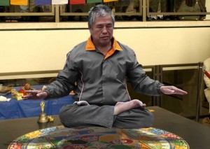
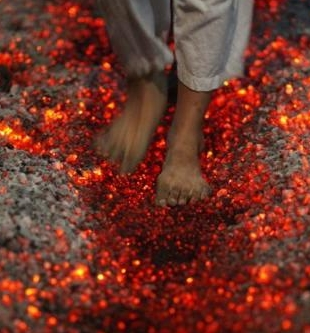

Meditation for a Gypsy

“Balance is a state of being, a state of calmness and extreme stillness amidst the chaos and turmoil that passes itself off as being the ‘true’ reality in which we live. Like a tornado, which weaves its chaotic magic by creating destruction, devastation and imbalance with and within everything it touches, so too does man. Like a tornado has its inner peace – the eye of the storm – so too has Man. The centre of every storm is absolute peace, pure stillness and utter calm – complete balance amongst all the surrounding chaos. The centre of Man is no different. We need to find this inner centre, this inner balance, our own area of absolute stillness to avoid living in our own and everybody else’s chaos. A storm is only one example of how Nature shows us where and how we can find this balance, this space and inner peace of pure tranquillity.”
People meditate in various ways — there are as many techniques as there are spiritual disciplines. They all promise the practitioner this state of inner peace. I find it is harder to reach the harder you try, or the more ‘serious’ you take yourself as a meditator. For me, personally, life is about ‘state of play’. I’d rather meditate upon the state of flight of a butterfly — call me a dilletante, I won’t mind. We shouldn’t get ‘hung up’ on methodology — whatever works for each individual is OK. However, we should realize the goal of meditation. If we don’t know what we intend then what is the rationale of disciplining the mind to achieve it? And, if we don’t recognize it when we experience it, then all of our meditation has been for nought. For myself, I accept the above described goal — call it balance. Given this goal and understanding it as inner peace and tranquility, it should be obvious that we’ll never realize it by becoming caught up in the ‘whirlwind’ of worldly affairs — the rat race of the modern lifestyle. It’s easier to define what balance is not than what it is. Our own planet is not balanced — our axis is tilted over at more than 23 degrees. Is it any wonder that we feel unbalanced ourselves? I find the idea of balance easiest to understand on a bicycle. I have owned at least two dozen mountain bikes, many of them self-designed and put together in a do-it-yourself bike shops, and I’ve ridden them up and down hills, across streams and fields, through the mud and rain, on and off the road, and, around the countryside near Mae Sot in Thailand. I often followed the Moei River, the border between Burma and Thailand, as the river does its ‘snake dance’ — sometimes near the road, sometimes not. I practiced ‘balance’ this way and got some exercise, fresh air, and sunshine as well. I don’t think I could manage to find ‘balance’ at the top of an occult mountain, or pyramid, of occult bullshit! I think I can handle a ‘simple mantra’ — but not that ‘secret’ stuff! I am talking about self-affirmations, or just ‘me talking to myself and remembering who I am and want to be’.
Some of us may not be able to meditate and may find it does not serve us as well as it serves others. Each of us should determine what it is that works for us; be it meditation, listening to music, painting, writing, poetry, walking the dog (or meditating with him if you can get him trained), being in nature (Do you feel a deep sense of peace and belonging and wonder in the midst of a forest, by the ocean, or on a mountain top? Are you speechless with awe when you look up at the sky on a clear moonless night and see the Milky Way strewn with stars as thick as sand on a beach or when you see breakers crashing on a rocky shore, or hear wind rustling in a poplar’s leaves? Are you uplifted by the energy and creativity of existence? If so, you might be a pantheist), or whatever it takes to allow us the opportunity to ‘switch off’ and reach that ‘daydream’ state of contemplation that may allow our ‘inner tuition’ to find its voice and be heard. The more we try to go inwards the harder the journey becomes. The natural path is the opposite of the way we have been taught to succeed in life. We are constantly taught to try harder, in sport, in the classroom, and in performing. Going within is all about ‘not trying’ and this is alien to our upbringing. Trying is the way of the ego and intellect — it prevents us from finding out more of our heritage and worth. The more we try and meditate to go inwards, the more we block the process, which is why we need to find what allows us to reach that state of contemplation for ourselves. Anything which can manage to switch off the influence of the mind, ego, or intellect, will allow our inner self to communicate better with our conscious mind unopposed. Our inner being is constantly communicating with us, but because of the chatter and noise created by the mind and the intellect and the outside reality, we tend not to hear the message. It is a question of tuning out the mind and the external noise and tuning instead into the inner voice. This takes time and perseverance and it may take a while before we find what works best for us. For me, dream yoga works — though, I find myself startled into wakefulness at all times of the night. Dreams can also become polluted with the ‘seep-through’ sewage of other peoples’ minds. Those messages from the so-called subconscious, or undifferentiated sea of unconsciousness made up of ‘what other people around the world may be thinking’ while we are not focused on our day ‘dream’ can be just plain confusing. Sometimes, if other minds are out of balance themselves, or just plain crazy, we may find their ‘thoughts’ disturbing. Well, there it is — that tornado, or ‘whirlwind’. It is on the inside of us at times as well. We should try our best not to get caught up in it wherever we encounter it! Peace is in our heart when we are relaxed and home in our own immediate environment. So, how does one stay balanced and centered?

Here is some good advice (from the Middle Path):
It is because people say something is beautiful that the idea of ugliness exists. It is because people say something is good that the idea of evil exists. Being and non-being come out of each other. Difficult and easy are part of each other. Long and short define each other. High and low determine each other. Sharp and flat harmonize each other. Front and back follow each other. Therefore the Wise One acts without doing, shows without saying, accepts without reservation, receives but doesn’t possess, raises but doesn’t own, guides but doesn’t depend, succeeds but isn’t proud. And for this very reason, he is successful. Balance is decreasing what is excessive and increasing what is deficient.
The middle of the path is where balance lies. Don’t be high. Don’t be low. Just be ordinary and walk the middle of the path. Don’t be up front, don’t be left behind. Just be ordinary and walk the middle of the path. Don’t be difficult, don’t be easy. Just be ordinary and walk the middle of the path. Don’t go too far, don’t stop too short. Just be ordinary and walk the middle of the path.


BUT, EVERY SINGLE ONE OF THEM has successfully achieved their own goals. THEY ARE SECURE in the knowledge that they have done what THEY set out to do and that they have done it well. They are CONSCIOUS of their success and they APPRECIATE it every day.
So, I would only add: “Don’t walk like an Egyptian” (as the media would have us believe is necessary — getting caught up in the ‘whirlwind’ of worldly events) but do “Walk like a Gypsy!” You’ll live longer, breathe FREEDOM, and may learn something about expressing your personal JOY instead of RAGE. All TRUE revolutions are internal — don’t let yours be co-opted!
Filed under: Gypsy Spirit and
Leave a Reply